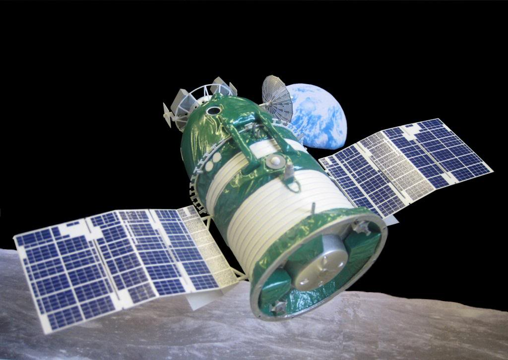
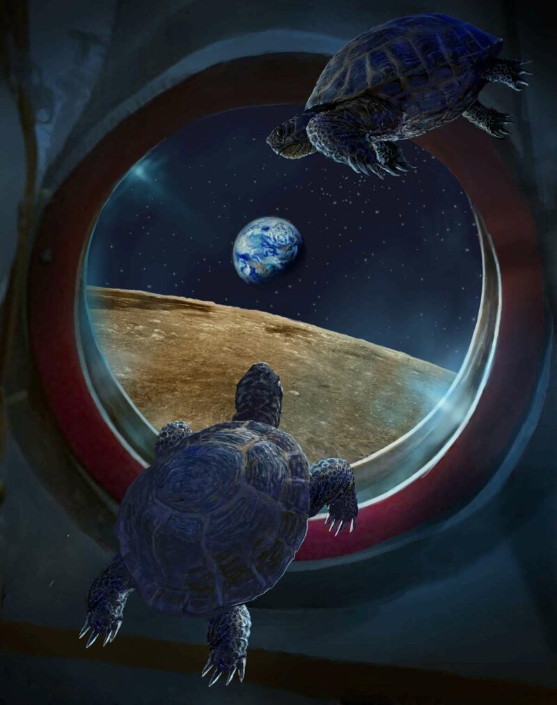

15 сентября 1968 года состоялся запуск беспилотного корабля Зонд-5 советской программы Зонд. В сентябре 1968 года он стал вторым космическим кораблем, совершившим полет вокруг Луны, и первым, кто благополучно вернулся на Землю. На борту космического аппарата находились животные и растения: две среднеазиатские черепахи, мухи, цветы, лук и т.д. Черепахи претерпели биологические изменения во время полета, но был сделан вывод, что изменения произошли в основном из-за голода, и что они мало пострадали от самих космических путешествий.

